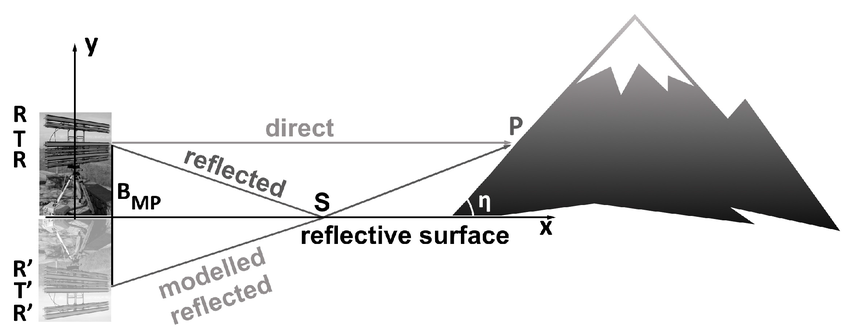
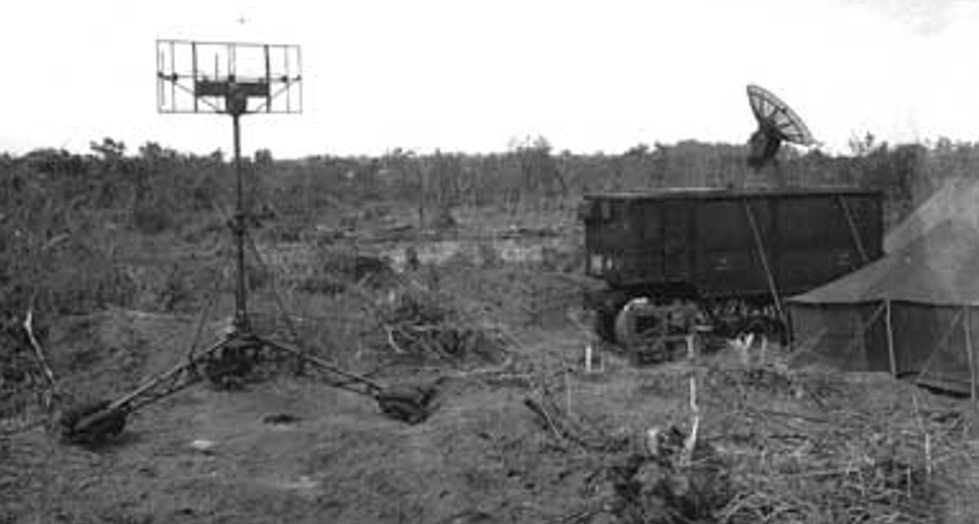
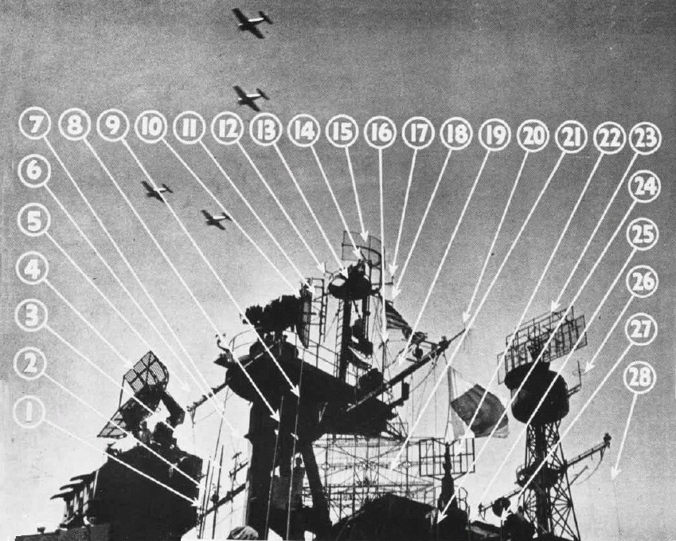
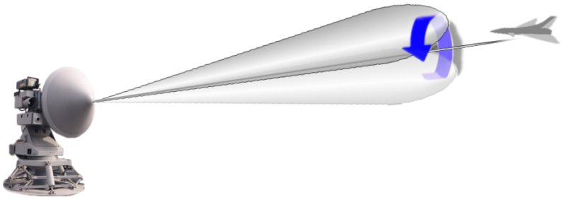
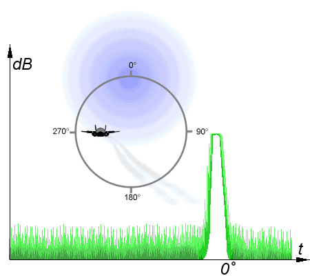
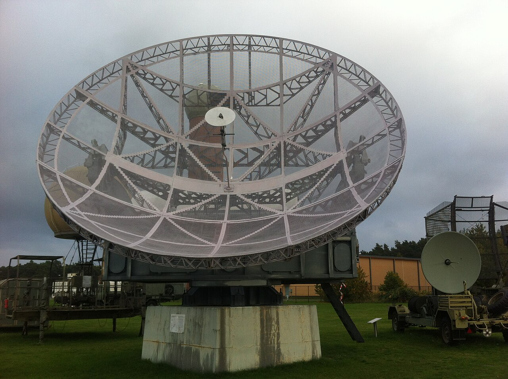

S band 레이더의 등장 (2) - 항모 아일랜드가 점점 지저분해지는 이유
게시: 2025-01-09T06:30:29+09:00
<좋아진 점과 나빠진 점> Cavity magnetron 이전의 레이더는 운용 교리가 간단했음. 위아래로 펼쳐진 부채살 같은 레이더 빔(beam)을 사방으로 휘휘 휘둘러대다 보면 거기에 뭔가 걸리기 마련. 그런데 그 부채살의 두께, 즉 beam width는 SCR-268 레이더의 경우 약 10도. 그러니 정확한 방위각을 측정하기 위해서는 부채살에 뭔가가 걸리면 레이더 빔을 좌우로 조금씩 움직여가며 정확한 위치를 잡으려 애써야 했음. 이 방식의 가장 큰 문제는 여태까지 여러번 미해군 요격기 조종사들을 애먹인 고도 측정의 문제. 위아래로 활짝 펼쳐진 부채살을 휘두르다가 거기에 뭔가가 부딪혔다는 것을 감지할 수 있을 뿐, 정확히 위쪽에 부딪힌 것인지 아래쪽에 부딪힌 것인지를 알 수가 없음. 그나마 로이드 거울(Lloyd's mirror) 효과에 의해 항공기에 부딪혀 되돌아온 직접 반사파와, 그 반사파가 다시 해면에 부딪혔다가 반사된 2차 간접 반사파와의 상쇄 효과 때문에 발생하는 fade area(소멸 구간)을 통해, 대충 그 고도를 짐작할 수 있었을 뿐. (https://nasica1.tistory.com/726 참조) 그러나 이런 방식에 의한 고도 측정은 그야말로 짐작에 불과하여 너무나 부정확했고 또 짐작 자체에 걸리는 시간이 너무 길었음.

(레이더의 로이드 미러 효과를 보여주는 그림) 그런데 cavity magnetron이 도입되면서 3GHz의 전파를 이용할 수 있게 되자 모든 것이 달라졌음. 일단 안테나 모양이 확 바뀌었음. 과거처럼 침대 매트리스 스프링 프레임 같은 구조물에 가로로 배치된 dipole (쌍극자)을 여러개 배열한 모습이 아니라, 우리에게 익숙한 접시형 안테나가 되었음. 그러면서 레이더 빔의 폭과 모양도 바뀜. beam width가 10도에서 4도로 대폭 줄었음. 그런데 그것뿐만 아니라 위아래로 활짝 펼쳐진 부채살처럼 생긴 레이더빔이, 마치 플래쉬 라이트처럼 좌우는 물론 상하로도 폭이 4도 정도가 되었음. 그러니까 이젠 부채살을 휘두르는 것이 아니라, 레이저 포인터를 휘두르는 셈이 된 것.

(이미 여러번 보신 SCR-584 레이더의 접시형 안테나) 그러니 좋은 점은 그 레이더 빔을 휘두르다가 거기에 뭔가가 걸리면, 과거보다 더 정확한 방위각을 단번에 파악할 수 있었던 것은 물론, 고도까지도 정확하게 파악이 가능했음. 문제는 드넓은 하늘을 레이저 포인터로 샅샅이 뒤지는 것이 쉽겠냐는 것. 그냥 한바퀴 사방으로 부채살을 돌리면 되는 것이 아니었음. 이 문제는 어떻게 해결? 간단. 그냥 과거의 구형 200~300MHz 레이더를 그냥 그대로 두어 탐색용으로 쓰고, 새로 cavity magnetron을 써서 만든 3GHz 레이더를 추적용 레이더로 쓰는 것. 먼저 탐색용 레이더가 '방위각 75도, 거리 50km 지점에 미확인물체 발견'이라고 보고하면 추적용 레이더가 그 방향으로 레이저 포인터 같은 좁은 레이더 빔으로 정밀 탐색에 들어가는 것. 그래서 신형 레이더가 나왔다고 구형 레이더가 없어지는 것은 아니었고, 항모나 전함 등의 수퍼스트럭춰 꼭대기는 갈 수록 온갖 안테나로 뒤덮이게 되었던 것.

(사진은 Essex급 정규항모 USS Lexington (CV-16)의 1944년 말의 아일랜드(island) 모습. 10번의 SM 레이더가 cavity magnetron을 이용한 신형 3GHz 레이더이고, 13번, 21번과 23번이 기존 기술로 만들어진 탐색용 레이더인 SG와, SK-1, 그리고 SC. SK-1이나 SC나 모두 위에 BT-5 IFF interrogator를 달아둔 것이 보임. 물론 SM 레이더에도 IFF 장치가 달려있는데, 그것이 바로 11번의 SO IFF interrogator. 15번은 함재기들이 모함을 쉽게 찾을 수 있도록 유도해주는 YE homing beacon. (https://nasica1.tistory.com/403 참조) <Conical search란 무엇인가?> 그런데 사실 beam width가 4도라면 레이저 포인터라고 말하기엔 약간 부끄러운 수준이고, 기존 200~300MHz 레이더 빔의 10도에 비해 획기적으로 좁아진 것도 아님. 그러니까 4도 폭의 빔에 걸렸다고 해서 당장 포격을 날릴 수준으로 정확한 방위각을 얻지는 못하는 셈. 과거의 10도 폭의 레이더 빔에 뭔가가 걸리면 정확한 방위각을 재기 위해 좌우로 레이더 안테나를 살짝살짝 움직여 목표물이 사라지는 방위각과 강한 신호를 보여주는 방위각을 측정하여 정확한 방위각을 확정하는 방법을 사용. 그런데 cavity magnetron을 이용한 4도 폭의 레이더 빔으로는 그 방식을 쓸 수가 없음. 레이더 빔의 모양이 과거처럼 위아래로 펼쳐진 부채살 같은 모양이 아니라 그냥 플래쉬라이트의 빛처럼 좁은 원기둥 모양이었기 때문. 그런 좁은 원기둥 모양의 빔으로 목표물의 정확한 방위각과 고도까지 한번에 찾으려면 어떻게 해야 했을까? 그것도 간단. 목표물이 빔에 걸리면 그 주변으로 둥글게 둥글게 레이더 빔을 돌림. 그러면 어느 각도에서 제일 강한 반사파가 나오는지 확인할 수 있음로 정확한 방위각과 고도를 한꺼번에 파악 가능. 바로 이런 conical search 방식으로 인해 저런 접시형 레이더 안테나는 우리가 흔히 생각하는 것처럼 그냥 360도로 빙글빙글 돌아가는 것이 아니라 일정한 축을 중심으로 둥글게 접시를 돌림.

(가운데 축을 중심으로 손가락으로 잠자리를 헷갈리게 할 때처럼 둥글게 둥글게 레이더 빔을 휘휘 돌리는 것이 핵심)

(그렇게 둥글게 돌릴 때 가장 강한 신호가 방출되는 방향을 찾는 모습)

(독일은 끝끝내 cavity magnetron 기술을 확보하지는 못했지만 klystron 기술을 통해 560 MHz의 전파를 생성할 수 있었고, 그걸로 나름 꽤 정밀한 대공포 조준용 레이더를 만듬. 그것이 바로 사진 속의 뷔르츠부르크(Würzburg) 레이더이고 연합군의 것과 거의 유사한 형태의 안테나를 가지고 있었으며, 심지어 conical search도 동일한 방식으로 사용되었음. 고래의 지느러미와 물고기의 지느러미처럼 출발은 달라도 결국 유사한 모양을 가지게 된다는 것을 보여주는 셈.)